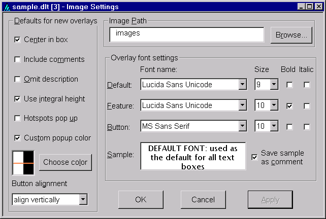

This dialog is provided to change settings related to display of images and their text overlays. It is opened either by choosing 'View > Image settings' from the menu; by clicking on the 'Settings' button of the images panel of the Item Editor or Character Editor windows; or by right-clicking the mouse on an image file name in an images panel or a displayed image and selecting 'Image settings' from the resulting menu. Here is an example.

The left portion of this dialog selects default characteristics to be applied to newly created text overlays on images. Changing these settings generally has no effect on existing overlays. An exception is that changing 'Button alignment' will affect existing push-button overlays if those overlays are later edited or repositioned on their image. For more detailed information on the meaning of these settings, see the section below on Image Windows and Overlays.
Note that changes made within this dialog do not take effect immediately. You must click either the 'Apply' button or 'OK' button (which also closes the dialog) for any changes to be applied.